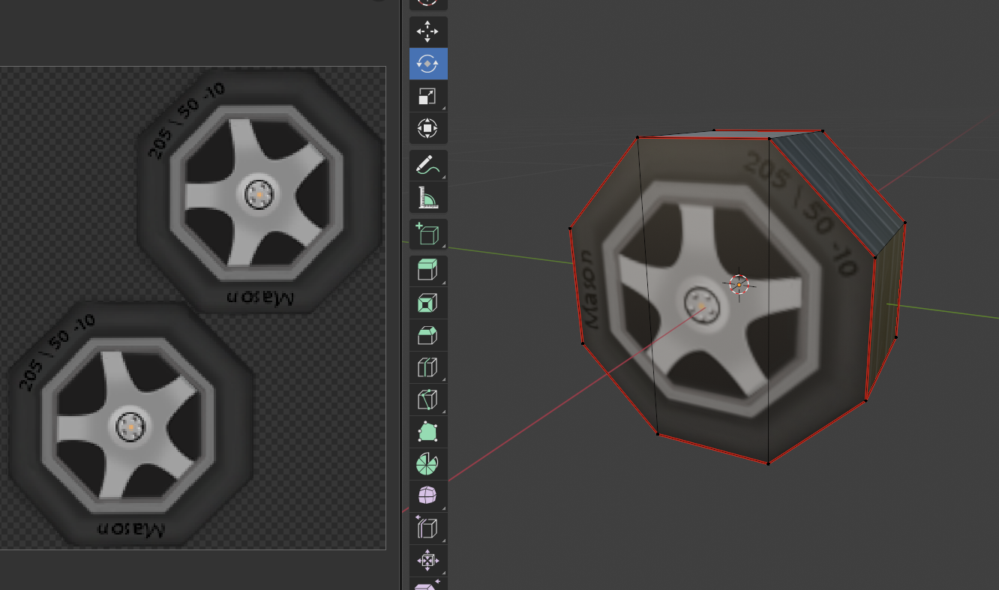
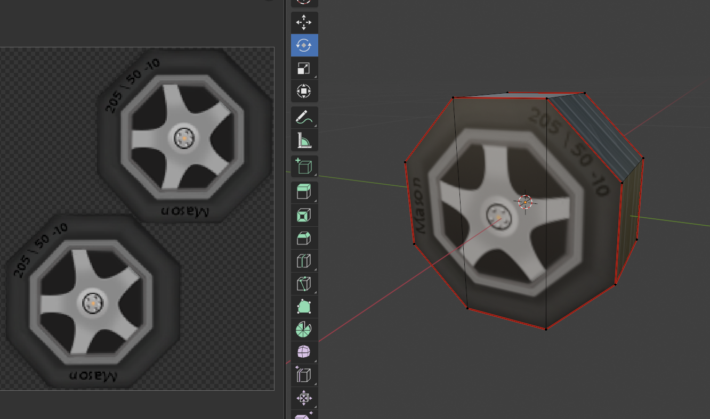

Props
This page features a variety of pixel art props and interactive game items. These objects support gameplay and world-building — from signage and tools to decorative elements and collectibles.

This page features a variety of pixel art props and interactive game items. These objects support gameplay and world-building — from signage and tools to decorative elements and collectibles.
These are UI props I created for A Warrior’s Recipe, including Bart’s backpack storage, the in-game currency, a cooking timer, and a “closed” sign used to lock up the shop. I focused on keeping all the designs cohesive with the game’s rustic atmosphere—intentionally avoiding bright neon colors in favor of earthy tones and soft details. Each prop was designed to feel hand-crafted and charming, matching the cozy, homegrown aesthetic of the game world.
This is a carrot plant designed for A Warrior’s Recipe. It was a special gift to Bart, and he waters it lovingly every day. The plant is small, with a baby carrot just starting to grow—cherished by Bart as a symbol of care, growth, and his journey as both a warrior and a chef. I wanted this prop to feel personal and meaningful, adding a quiet touch of warmth to the game’s world.


 

Here are two car prop models and their tires that I textured for the game GMU Drift. While I didn’t create the 3D models themselves, all of the texturing was done by me. It was a collaborative process with the entire art team, and it was incredibly satisfying to create something that both the modelers and I were proud of. The visual theme was centered around the GMU aesthetic, so I incorporated lots of greens and yellows, using soft shading and avoiding harsh lines to maintain a clean, cohesive look that matched the overall style of the game.